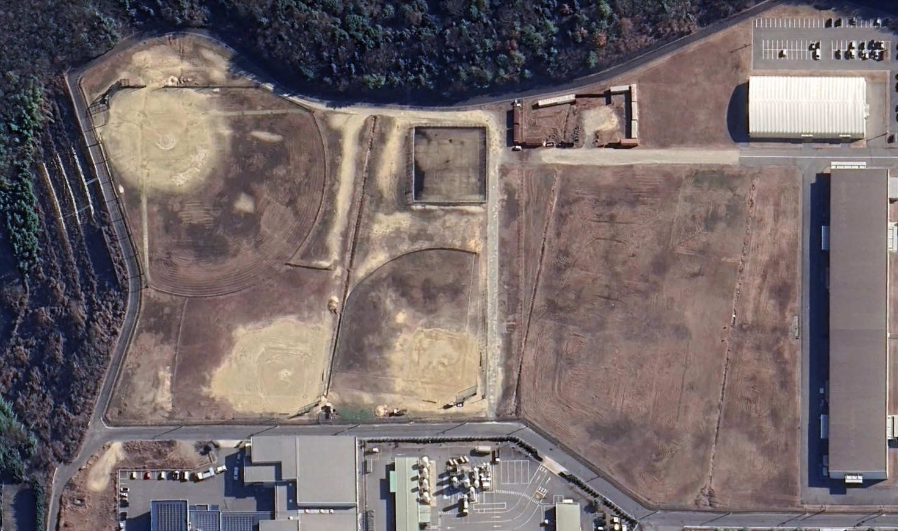

HOME / 1ST TOURNAMENT
THE 1ST
株式会社古川製作所 presents
HERO's CUP は、ここから始まります。記念すべき第1回は、広島県三原市・株式会社古川製作所様のグランド（3面使用）をお借りして開催します。広島県内で活動する小学生軟式野球16チームが集まり、2日間・全員野球で戦います。
OUTLINE
開催概要
本ページの内容は第1回大会（株式会社古川製作所 presents HERO's CUP in 三原）に限ったものです。第2回以降の開催地・会場・日程は、あらためて決定・公表します。
| 大会名 | 株式会社古川製作所 presents 第1回 HERO'S CUP in 三原 |
|---|---|
| 開催日程 | 2026年11月28日（土）・29日（日） 2日間 |
| 会場 | 株式会社 古川製作所グランド（3面使用）会場をご提供いただく古川製作所様に、心より御礼申し上げます。 |
| 所在地 | 広島県三原市沼田西町小原200-65 |
| 参加チーム | 広島県内で活動する小学生軟式野球チーム 16チーム登録リーグは問いません。 |
| 参加選手数 | 1チーム 最小9名 〜 最大20名 |
| ベンチ入り | 1試合 最大18名選手が18名以上のチームは、1試合目に出場しなかった選手を2試合目に必ずスタメンで出場させてください。 |
| チーム参加費 | 1チーム 5,000円 |
| 試合時間 | 60分制（最大6回）／コールドゲーム無し60分を過ぎたら、新しいイニングには入りません。 |
| 投球数 | 投手の投球数は70球まで |
| 形式 | 16チームによるトーナメント戦（交流戦を含む）／1チーム1日2試合 |
| 表彰 | Aブロック 優勝・準優勝／Bブロック 優勝・準優勝／HERO賞（大会理念を最も体現した選手） |
| 救護体制 | 第1グランド付近に救護ブースを設置。専門の救護士を配備し、怪我や熱中症などに対応します。 |
| 主催 | HERO's CUP 実行委員会 |
三原市・古川製作所グランドでの開催は、第1回大会に限った会場です。HERO's CUP は特定の会場に固定された大会ではなく、理念に賛同いただける地域・企業とともに、開催地を広げていくことを前提に設計しています。第1回の記録と反省は、次回以降の運営に引き継ぎます。
SCHEDULE
想定スケジュール（2日間）
組み合わせが決まりました。チーム名入りの対戦表は、このすぐ下にあります。
BRACKET
トーナメント構成
16チームをA・Bの2ブロックに分け、Aブロックは第1グランド、Bブロックは第2グランドで戦います。2日目に、それぞれのブロックで決勝を行います。敗れたチームも交流戦にまわるため、すべてのチームが1日2試合を戦います。「初戦で負けて1日が終わる」を、この大会はつくりません。
1日目 11月28日（土）・2日目 11月29日（日）
2日目12:20決勝A
2日目9:30A'-①
2日目10:50A'-②
1日目9:30A-①
1日目10:50A-②
1日目12:20A-③
1日目13:40A-④
福木フィールズ少年野球クラブ
三原ファイヤーズ
福山ウエスト野球クラブ
幸崎パイレーツスポーツ少年団
本郷南方ライナーズ
キタヒロファイターズ
阿品スカイヤーズ
中筋スポーツ少年団軟式野球部
1日目 11月28日（土）・2日目 11月29日（日）
2日目12:20決勝B
2日目9:30B'-①
2日目10:50B'-②
1日目9:30B-①
1日目10:50B-②
1日目12:20B-③
1日目13:40B-④
三原レッドアロー少年野球クラブ
宮内アベンジャーズ
大野友星
三原レッキーズ少年野球クラブ
中之町イーグルス
三原ジュニア少年軟式野球クラブ
段原レッドイーグルス
三原ベアーズ
1日目 11月28日（土）
10:50交流戦①
第3G
12:20交流戦②
第3G
13:40交流戦③
第3G
15:00交流戦④
第1G
2日目 11月29日（日）
10:50交流戦⑤
第3G
12:20交流戦⑥
第3G
1日目 11月28日（土）
9:30A-①
10:50A-②
12:20A-③
13:40A-④
2日目 11月29日（日）
9:30A'-①
10:50A'-②
2日目 決勝
12:20決勝A
1日目 11月28日（土）
9:30B-①
10:50B-②
12:20B-③
13:40B-④
2日目 11月29日（日）
9:30B'-①
10:50B'-②
2日目 決勝
12:20決勝B
1日目 11月28日（土）
10:50交流戦①第3G
12:20交流戦②第3G
13:40交流戦③第3G
15:00交流戦④第1G
2日目 11月29日（日）
10:50交流戦⑤第3G
12:20交流戦⑥第3G
各試合の敗者は交流戦にまわります（組み合わせは上の表の「交流戦」）。交流戦も本大会の正式な試合として、全員出場ルール・HERO審査制度・ヒーローインタビューをすべて同じように実施します。交流戦だから手を抜く、という試合はありません。
VENUE
会場・レイアウト
第1回大会の会場は、広島県三原市沼田西町小原200-65。3面のグランドを同時に使用し、駐車場・アップ可能エリア・救護ブース・大会本部を配置します。

第3グランド 第2グランド 第1グランド 駐車場A 駐車場B 大会本部・救護ブース アップ可能エリア トイレ| 会場名 | 株式会社 古川製作所グランド（3面使用） |
|---|---|
| 住所 | 広島県三原市沼田西町小原200-65 |
| 駐車場 | 駐車場A・駐車場Bをご用意しています当日は運営スタッフの誘導に従ってご駐車ください。 |
| 設備 | トイレ／アップ可能エリア／大会本部（第1グランド前）・救護ブース |
| 飲食 | 会場内にて比治山冷凍カレーの販売を予定しています |
| 撤去 | 17時までに完全撤去 |
第1回大会の表彰
Aブロック 優勝Bブロック 優勝
各ブロックを2日間勝ち抜いたチームを表彰します。
大会理念を最も体現した選手へ。勝敗とは無関係に選ばれる、この大会でいちばん輝かしい賞です。
Aブロック 準優勝Bブロック 準優勝
最後の一球まで戦い抜いた足跡を表彰します。
広島県内で活動する小学生軟式野球チームであれば、登録リーグを問わずご参加いただけます。定員に達し次第、受付を終了します。